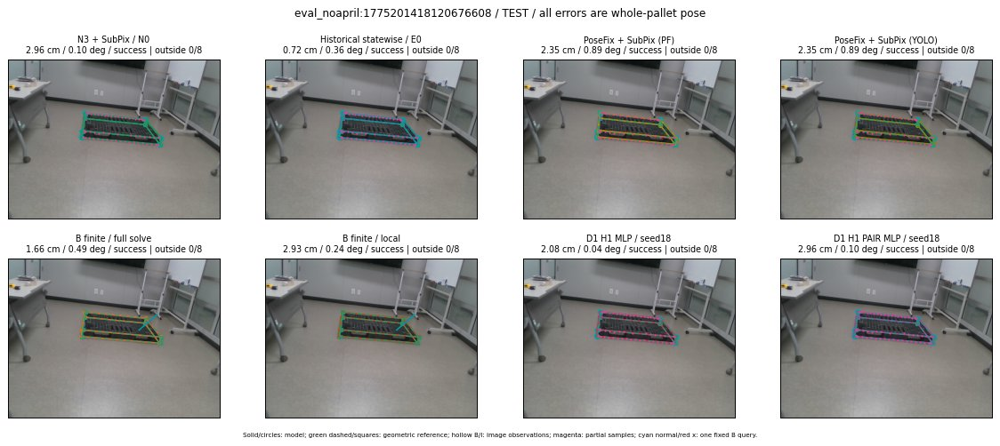

Whole-pallet pose errors; reference is a fixed geometric annotation, not certified physical GT.

Scores are uncalibrated logits. N0 retention is a numerical pose alias; it differs from H0 none or B fallback. B/I and profiles in baseline/B panels are original observations; L panels use new D1 observations. Only one deterministic supported B query is shown in a thumbnail; full support counts are below. Grey privacy rectangles edit the display copy only and are unrelated to O states; all observations were measured on original pixels. Thumbnails use JPEG quality85; detailed scientific panels are PNG.
| Method | Whole pose / cm, deg | Actual source | Selected ID | Score | Archived candidates | Eligible | N0 retained | H0 none | Fallback | Finite profiles |
|---|---|---|---|---|---|---|---|---|---|---|
| Raw YOLO + F | 6.47 cm / 0.68 deg / failure | OTHER | None | N/A | N/A | N/A | False | N/A | None | N/A |
| N3 + SubPix / N0 | 2.96 cm / 0.10 deg / success | N0 | None | N/A | N/A | N/A | True | N/A | None | N/A |
| Historical statewise / E0 | 0.72 cm / 0.36 deg / success | E0_REGENERATED | None | N/A | N/A | N/A | False | N/A | False | N/A |
| PoseFix raw | 7.83 cm / 0.40 deg / failure | OTHER | None | N/A | N/A | N/A | False | N/A | None | N/A |
| PoseFix + SubPix (PF) | 2.35 cm / 0.89 deg / success | OTHER | None | N/A | N/A | N/A | False | N/A | False | historical support records 9; finite audit N/A |
| PoseFix + SubPix (YOLO) | 2.35 cm / 0.89 deg / success | OTHER | None | N/A | N/A | N/A | False | N/A | False | historical support records 9; finite audit N/A |
| Historical L, seed18 | 2.96 cm / 0.10 deg / success | N0 | N0 | N/A | 74 | 72 | True | True | True | N/A |
| Historical B fixed bank | 2.08 cm / 0.04 deg / success | OTHER | G10/ORIGINAL_WD/sample/0 | N/A | N/A | N/A | False | N/A | False | N/A |
| Historical B full | 1.61 cm / 0.44 deg / success | OTHER | NEW/B/ORIGINAL_WD/h0/G13/ORIGINAL_WD/sample/0/PROPOSED_NATIVE_YAW_0 | N/A | N/A | N/A | False | N/A | False | N/A |
| Historical edge full | 2.69 cm / 0.68 deg / success | OTHER | NEW/edge/ORIGINAL_WD/h0/G13/ORIGINAL_WD/sample/0/PROPOSED_NATIVE_YAW_0 | N/A | N/A | N/A | False | N/A | False | N/A |
| Historical AB full | 1.66 cm / 0.49 deg / success | OTHER | NEW/AB/ORIGINAL_WD/h0/G13/ORIGINAL_WD/sample/0/PROPOSED_NATIVE_YAW_0 | N/A | N/A | N/A | False | N/A | False | N/A |
| B finite / fixed bank | 2.08 cm / 0.04 deg / success | OTHER | G10/ORIGINAL_WD/sample/0 | N/A | N/A | N/A | False | N/A | False | 36/36 |
| B finite / full solve | 1.66 cm / 0.49 deg / success | OTHER | NEW_FINITE/B/ORIGINAL_WD/h0/G13/ORIGINAL_WD/sample/0/PROPOSED_NATIVE_YAW_0 | N/A | N/A | N/A | False | N/A | False | 36/36 |
| B finite / local | 2.93 cm / 0.24 deg / success | OTHER | NEW_FINITE/B/ORIGINAL_WD/h0/N0_LOCAL_SAME_PHYSICAL_POSE/ORIGINAL_WD | N/A | N/A | N/A | False | N/A | False | 36/36 |
| Edge finite / full solve | 2.69 cm / 0.68 deg / success | OTHER | NEW_FINITE/edge/ORIGINAL_WD/h0/G13/ORIGINAL_WD/sample/0/PROPOSED_NATIVE_YAW_0 | N/A | N/A | N/A | False | N/A | False | 36/36 |
| D0 H0 MLP / seed18 | 2.96 cm / 0.10 deg / success | N0 | N0 | 3.9082014560699463 | 40 | 38 | True | True | True | N/A |
| D0 H0 MLP / seed19 | 2.96 cm / 0.10 deg / success | N0 | N0 | 5.050507068634033 | 40 | 38 | True | True | True | N/A |
| D0 H0 MLP / seed20 | 2.96 cm / 0.10 deg / success | N0 | N0 | 2.24322772026062 | 40 | 38 | True | True | True | N/A |
| D0 H1 MLP / seed18 | 2.08 cm / 0.04 deg / success | OTHER | G10/ORIGINAL_WD/selected | 0.5181402564048767 | 40 | 38 | False | False | False | N/A |
| D0 H1 MLP / seed19 | 2.08 cm / 0.04 deg / success | OTHER | G10/ORIGINAL_WD/selected | -0.017908088862895966 | 40 | 38 | False | False | False | N/A |
| D0 H1 MLP / seed20 | 2.08 cm / 0.04 deg / success | OTHER | G10/ORIGINAL_WD/selected | -0.5430311560630798 | 40 | 38 | False | False | False | N/A |
| D1 H0 MLP / seed18 | 2.96 cm / 0.10 deg / success | N0 | N0 | 7.81685209274292 | 40 | 38 | True | True | True | N/A |
| D1 H0 MLP / seed19 | 2.96 cm / 0.10 deg / success | N0 | N0 | 8.632161140441895 | 40 | 38 | True | True | True | N/A |
| D1 H0 MLP / seed20 | 2.96 cm / 0.10 deg / success | N0 | N0 | 7.576711654663086 | 40 | 38 | True | True | True | N/A |
| D1 H1 MLP / seed18 | 2.08 cm / 0.04 deg / success | OTHER | G10/ORIGINAL_WD/selected | 0.5136979818344116 | 40 | 38 | False | False | False | N/A |
| D1 H1 MLP / seed19 | 2.08 cm / 0.04 deg / success | OTHER | G10/ORIGINAL_WD/selected | 0.353311687707901 | 40 | 38 | False | False | False | N/A |
| D1 H1 MLP / seed20 | 2.08 cm / 0.04 deg / success | OTHER | G10/ORIGINAL_WD/selected | 0.11151117086410522 | 40 | 38 | False | False | False | N/A |
| D1 H1 ROLE AFFINE / seed18 | 2.08 cm / 0.04 deg / success | OTHER | G10/ORIGINAL_WD/selected | 0.748213529586792 | 40 | 38 | False | False | False | N/A |
| D1 H1 ROLE AFFINE / seed19 | 2.08 cm / 0.04 deg / success | OTHER | G10/ORIGINAL_WD/selected | 0.14541734755039215 | 40 | 38 | False | False | False | N/A |
| D1 H1 ROLE AFFINE / seed20 | 2.08 cm / 0.04 deg / success | OTHER | G10/ORIGINAL_WD/selected | 0.495283305644989 | 40 | 38 | False | False | False | N/A |
| D1 H1 PAIR MLP / seed18 | 2.96 cm / 0.10 deg / success | N0 | N0 | -0.5637738108634949 | 40 | 2 | True | False | False | N/A |
| D1 H1 PAIR MLP / seed19 | 2.96 cm / 0.10 deg / success | N0 | N0 | -0.23349721729755402 | 40 | 2 | True | False | False | N/A |
| D1 H1 PAIR MLP / seed20 | 2.96 cm / 0.10 deg / success | N0 | N0 | 0.2942880094051361 | 40 | 2 | True | False | False | N/A |
| D1 H1 PAIR ROLE AFFINE / seed18 | 0.72 cm / 0.36 deg / success | E0_REGENERATED | E0_REGENERATED | 0.17341865599155426 | 40 | 2 | False | False | False | N/A |
| D1 H1 PAIR ROLE AFFINE / seed19 | 0.72 cm / 0.36 deg / success | E0_REGENERATED | E0_REGENERATED | 0.12283460050821304 | 40 | 2 | False | False | False | N/A |
| D1 H1 PAIR ROLE AFFINE / seed20 | 0.72 cm / 0.36 deg / success | E0_REGENERATED | E0_REGENERATED | 0.08423193544149399 | 40 | 2 | False | False | False | N/A |
| Regenerated common E0 | 0.72 cm / 0.36 deg / success | E0_REGENERATED | E0_REGENERATED | N/A | N/A | N/A | False | N/A | False | N/A |